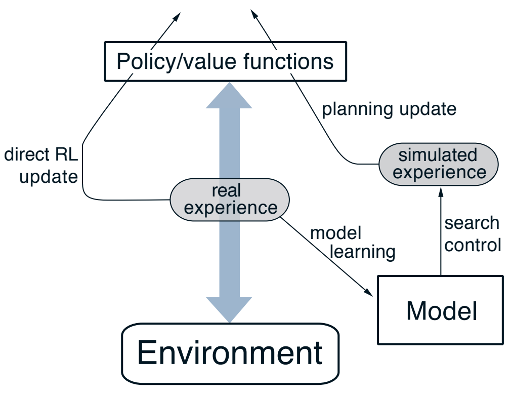
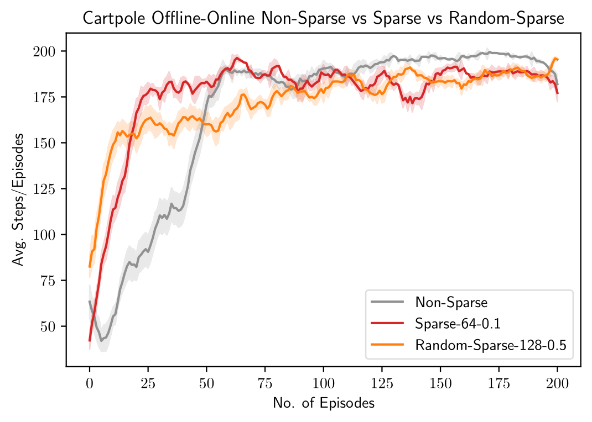
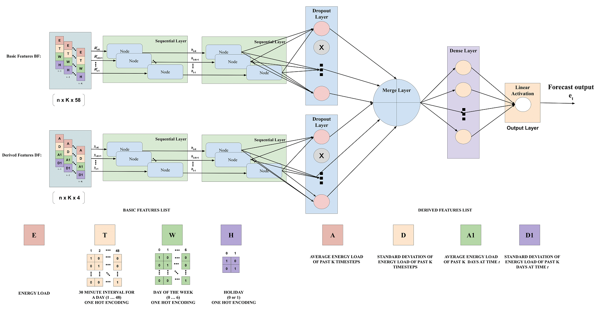
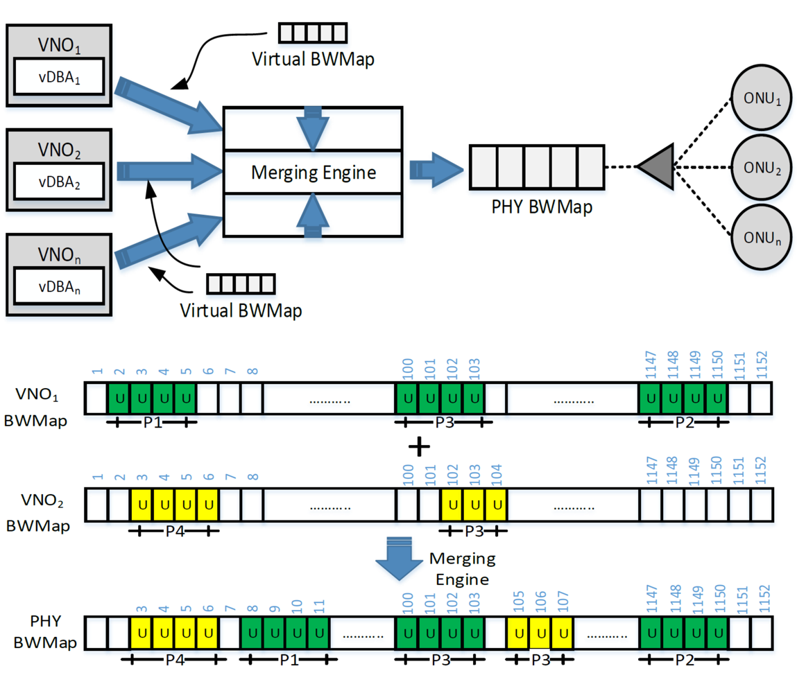

|
Abdul Wahab
wahab1 (at) ualberta (dot) ca
I am a graduate student working with Dr. Martha White at the University of Alberta, where I work on exploration and representation learning for reinforcement learning.
Previously, I worked as a machine learning engineer at Veeve.io, with Dr. Faisal Shafait and Dr. Ahmad Salman. I developed vision-based solutions for different modules of a smart shopping cart, like cart-state tracking, hand-motion analysis, trajectory analysis, gesture prediction, shrinkage control, item classification, and barcode-through-vision.
Before that I did my undergraduate from the National University of Sciences & Technology (NUST), Islamabad, Pakistan, working in TUKL-NUST R&D Lab with Dr. Faisal Shafait, and Dr. Arsalan Ahmad.
Over the years, I have had the pleasure of visiting the Augmented Vision lab DFKI Kaiserslautern, Germany, to work on analyzing line-scan camera inputs, with Dr. Gerd Reis and Dr. Didier Stricker.
Email /
CV /
LinkedIn /
Google Scholar /
Github
|
|
|
Research interests
|
|
My research interests include:
- Exploration in reinforcement learning
- Representation learning
- Continual learning
|
|
Current research projects
|
|
 Image from RL book
|
Effective Exploration with Sample Efficient Architectures
Abdul Wahab,
David Janz,
Martha White
In this work, we aim to combine theoretically backed exploration algorithms with sample-efficient architectures.
|
|

|
Understanding the role of representations in Offline-Online reinforcement learning
Abdul Wahab,
Muhammad Kamran Janjua,
Wesley Chung,
Maryam Hashemzadeh,
Martha White
In this project, we use Two-timescale networks (TTN) in the Offline-Online setting, in which an
agent is trained on offline data, and is then allowed to update the representation and the policy networks online. We empirically show that
TTN is well suited for the Offline-Online setting as the online updates are more stable and the model converges relatively faster.
We also study, analyze and compare different representation learning approaches like sparsity (FTA),
input transformations (sparse, random, random-sparse), augmentation, and self-supervised contrastive losses in different combinations,
to identify the best combination of these representation learning approaches.
|
|

|
Short-term load forecasting using bi-directional sequential models and feature-engineering
Abdul Wahab,
MA Tahir,
N Iqbal,
A Ul-Hasan,
F Shafait,
SMR Kazmi
IEEE Access, 2021
code
We propose a general method based on bi-directional sequential models (LSTMs) for short-term energy load forecasting suitable for
individual household energy forecasting and aggregated energy forecasting for a region.
|
|

|
Capacity sharing approaches in multi-tenant, multi-service PONs for low-latency fronthaul applications based on cooperative-DBA
Arsalan Ahmad,
Abdul Wahab,
Marco Ruffini,
Frank Slyne,
Sanwal Zeb,
Rana Azhar Khan
Optical Fiber Communications Conference and Exhibition (OFC), 2020
poster
We propose and compare algorithms to allocate upstream PON capacity, where multiple virtual operators generate independent frame-level allocation over a shared infrastructure. Our fragmentation-aware approach shows the ability to limit latency increase to a few microseconds.
|
|